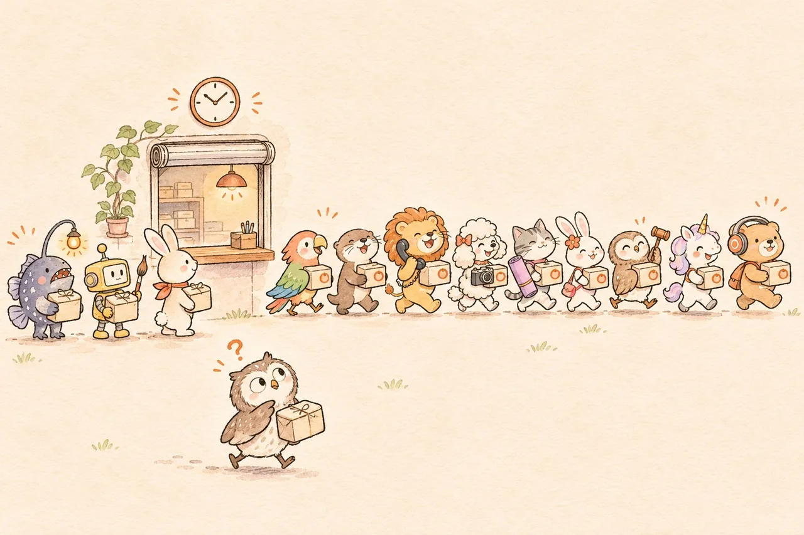

Nine apps were waiting for App Review. Here is what happened.
· Sona Orbit

On Monday I wrote that 9 of my 11 apps had a version waiting for App Review. The results came in over the week. Here is what happened next.
Review: five live apps became nine
On Monday five of my apps were in the store. Today nine are.
One was rejected: the Mac version of an app that is already live on iPhone. The reason given was "4.3 Design: Spam". I replied with an explanation. Three days, no answer.
Three versions are still waiting.
Search: one rank moved
On Monday Parroting was at 128 for "voice input" in Chinese. It is at 96 now.
For "translate" and "yoga" I'm still not in the first 180 results.
Some of the keywords I rewrote on Monday only go live with the next version of each app, so these ranks don't count yet.
Google: 66 pages, then 134
My sites add up to 499 pages. On Monday Google had indexed 66 of them. Today it's 134.
The sitemaps showed "Couldn't fetch" for five days. I found nothing wrong with the files. All I could do was resubmit every one and wait.
App number 12
What I did most this week was try to remember where each app was stuck. Which ones are still in review? Did I answer that rejection? Which keywords are live?
So I built app number 12. It has one user. Every hour it checks the store, Google and my own sites, and lists the places where they disagree.
On day one it listed 8 items.
This week's tally
- Live apps: 5 → 9
- Rejected: 1
- Still in review: 3
- Pages indexed by Google: 66 → 134
- New apps built: 1
- Users of that app: 1
I keep waiting.
This first went out as a thread on X: @SonaOrbit.